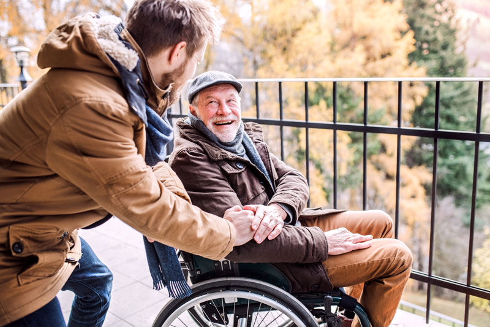

Our Vision
KindMap is a space where compassion shines. From quiet smiles to simple acts of help, every story of kindness reminds us that the world is full of warmth, one heart at a time.
welcome to kindmap,it's not just a platform , its a little slice of hope and kindness in a world that can sometimes feel heavy and overwhelming. its a big hug in the form of a website, a place where you can share your stories of kindness and connect with others who believe in the power of empathy and compassion.

KindMap is a space where compassion shines. From quiet smiles to simple acts of help, every story of kindness reminds us that the world is full of warmth, one heart at a time.
Our mission is to inspire kindness and empathy by sharing stories of compassion from around the world. We believe that even the smallest acts of kindness can create a ripple effect, making the world a better place for everyone.